前言
用了很長一段的 Blogger ，目前也已經停止使用了，至於為什麼，有興趣的朋友可以去舊站看看，大體來說，就是小弟希望能用 Markdown 當作 Source Code 的方式把文章留下來，以前在 Blogger 撰寫，雖然寫得很愉快，但貼上後，就是 HTML 格式了，對於未來想轉移，其實都很不方便。而後來看了很多的架站方案，基本上小弟我也不喜歡太複雜的…前後有嘗試過 Hugo ，但是 Hugo 搬移文章的工具，小弟我根本不知道該怎麼使用!!(遮臉) ，所以後來還是選擇了以 Node.js 為核心的 Hexo ，選擇 Hexo 的原因其實很簡單，主要是因為目前已經維護得很穩定，而且也有眾多文件。最後選擇架設在 GitHub 上面，其實也沒有甚麼特別的原因，只是因為他很佈署，又方便 XDDD.
這篇主要是紀錄一下自己的使用過程，雖然市面上已經有很多人寫過類似的文章了，但是有的時候，一些小設定，每次都要 Google 還是很麻煩的，所以就邊架設的過程中，就順便紀錄一下。
Hexo
Hexo 是基於 Node.js 開發的套件，它可以將 Markdown 轉成 HTML，而且提供了豐富的工具。
有興趣的朋友，也可以直接參考官網
安裝
首先，我們使用以下指令來安裝，當然，既然底層是 Node.js ，當然就是用 npm 了。
1 | language: node_js |
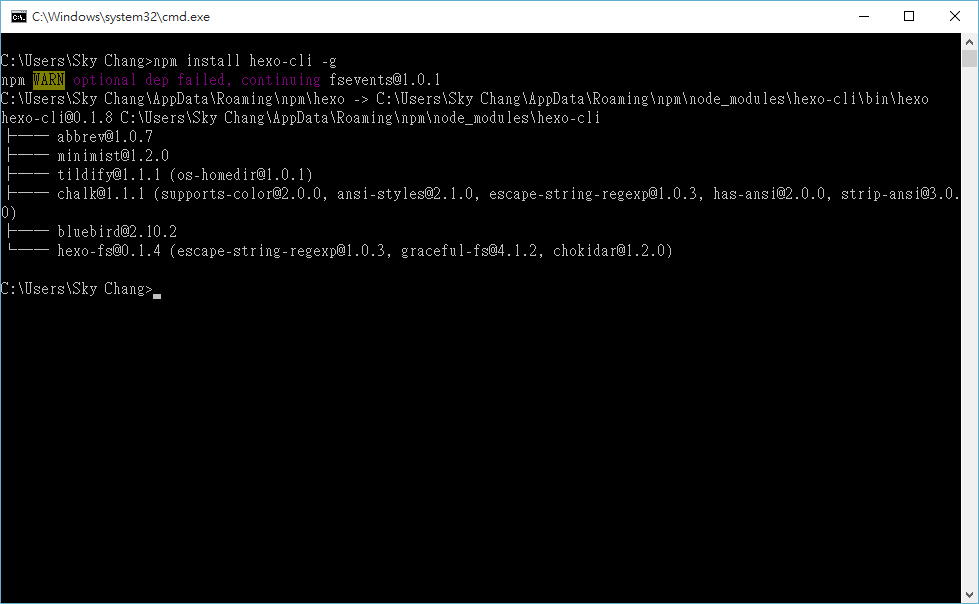
完成之後，就可以使用 hexo init 名稱 來建置
1 | hexo init blog |
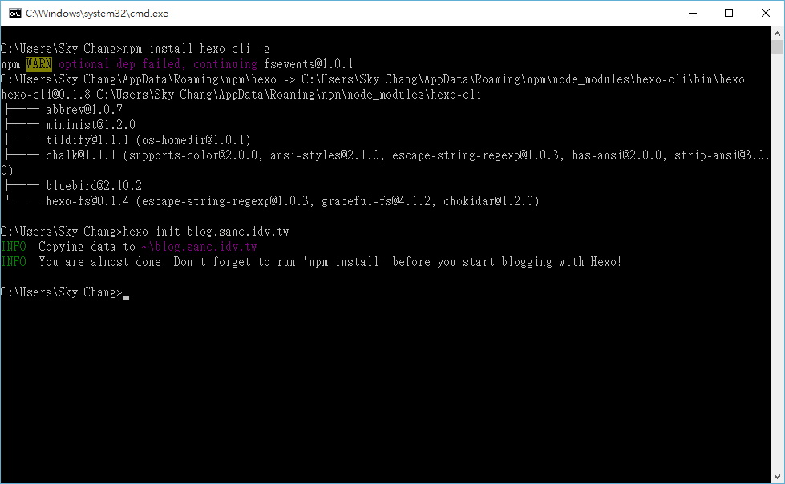
接下來，我們要進入剛剛建立好的 blog 目錄底下，並輸入 npm install 來進行載入套件。
1 | npm install |
這邊要特別注意一下，如果是使用 OSX 環境的朋友，請安裝 XCode 和 XCode Command Line 工具，不然會發生錯誤。
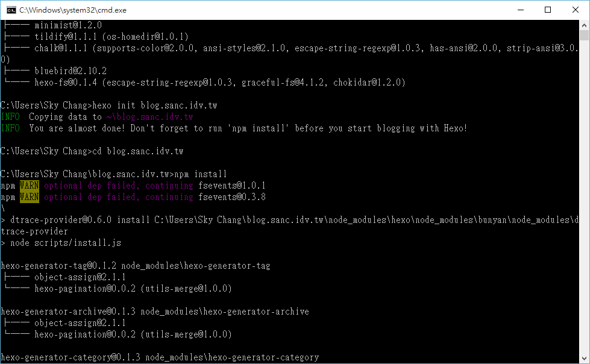
接著，我們可以簡單的使用 hexo server 來啟動 LocalHost 的 Server ，預設會在 localhost:4000 的位置，另外，雖然如下圖，訊息會 show 出 run 在 0.0.0.0:4000 ，但如果是 windows 環境，還是必須要打 localhost:4000。
( 0.0.0.0 代表的是可以從任何地方進行瀏覽此網站，localhost 代表的是只能從本地瀏覽此網站，無法從外部瀏覽 )
1 | hexo Server |
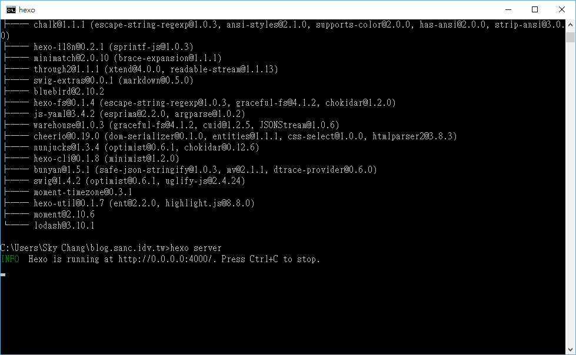
更換主題
如果用瀏覽器看，沒啥問題，我們就可以開始挑選喜歡的佈景主題，小弟這邊的主題是 Next 主題。
這邊你可以選擇 clone 或是，基本的 Download ，小弟是直接透過 Download 的方式。
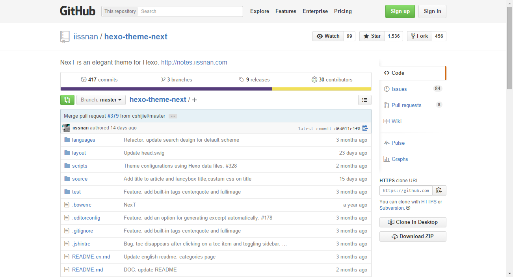
下載下來的檔案，解壓縮後，要把它放到 Theme 的目錄底下，並且改名成 Next。
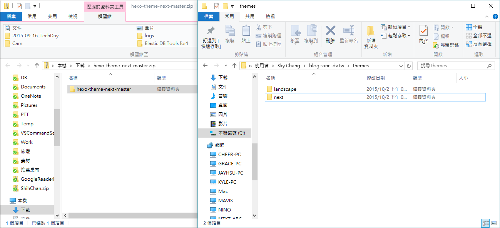
接下來，修改 _config.yml 檔案，找到 Theme ，並把它改成 Next。
( 當然，不一定要用記事本，小弟這邊是懶得用其他工具，就直接開了~ )
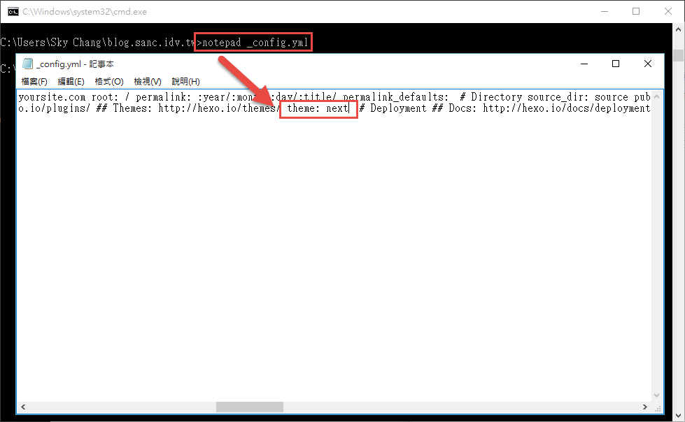
接著，我們就可以使用 hexo s –debug 來開啟 Server，加上 debug 會產生輸出 log 的效果，而 s 是 server 的簡寫。
1 | hexo s --debug |
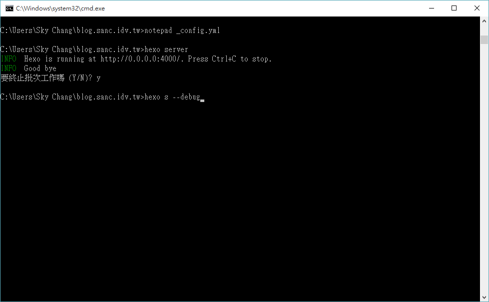
然後就可以看到漂漂的網站嚕!! ( 至少小弟是滿喜歡這種簡潔風格的…. )
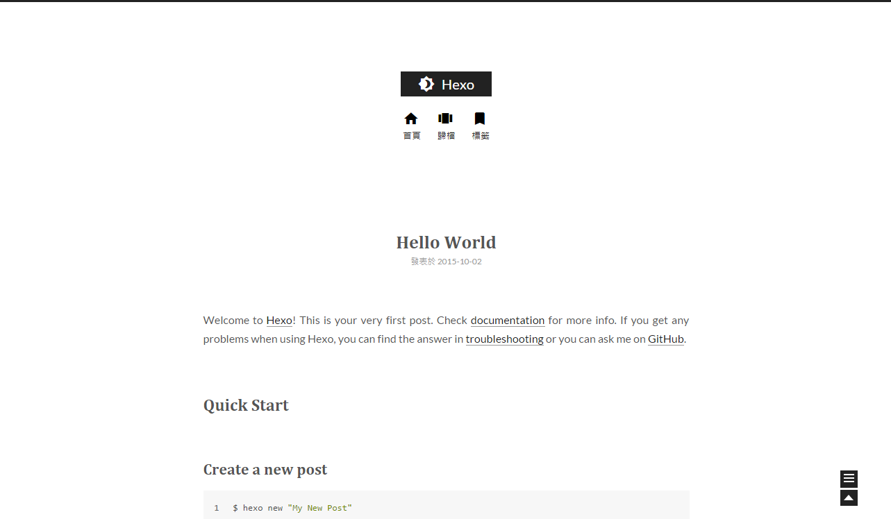
匯入資料
接下來，我們可以把原本的 Blogger 或是 WordPress 的資料移入進來。
如果要載入 Blogger ，小弟建議使用 RSS 讀讀入套件 ( Hexo 也只有這個方法…. )
所以我們要先裝一下 hexo-migrator-rss 這個 package。
1 | npm install hexo-migrator-rss --save |
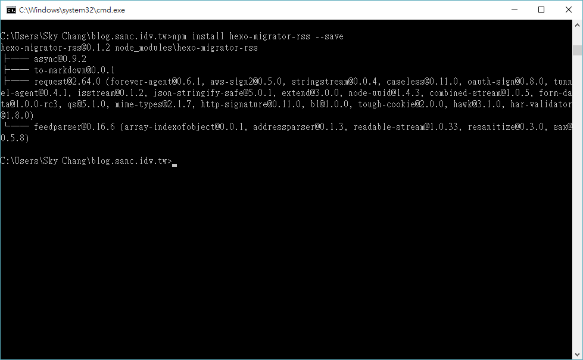
裝完之後，我們就可以使用下圖的命令讀入 Blogger 的文章。
( 通常如果沒給 max-result ，只會讀入少量的文章，所以這邊透過設定 max-result 的方式，來讀入所有文章 )
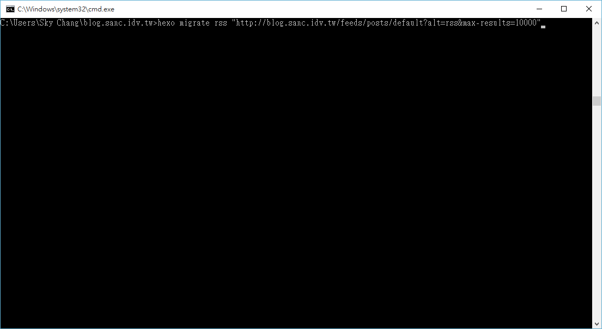
如果是要轉入 WordPress 則要安裝 hexo-migrator-wordpress 套件。
1 | npm install hexo-migrator-wordpress --save |
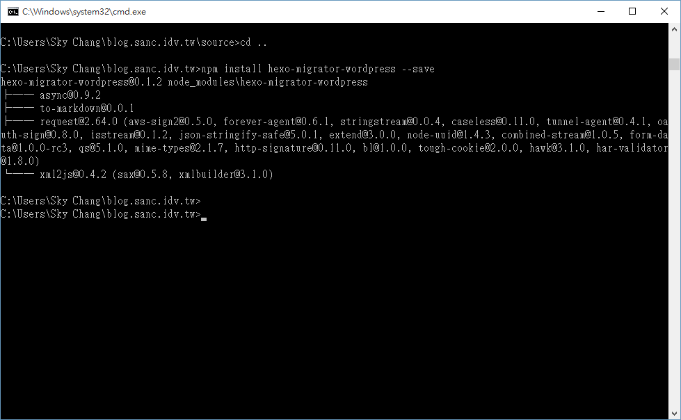
接下來，我們只要輸入如下圖的指令。
( 別忘了要先去 WordPress 把文章備份出來 )
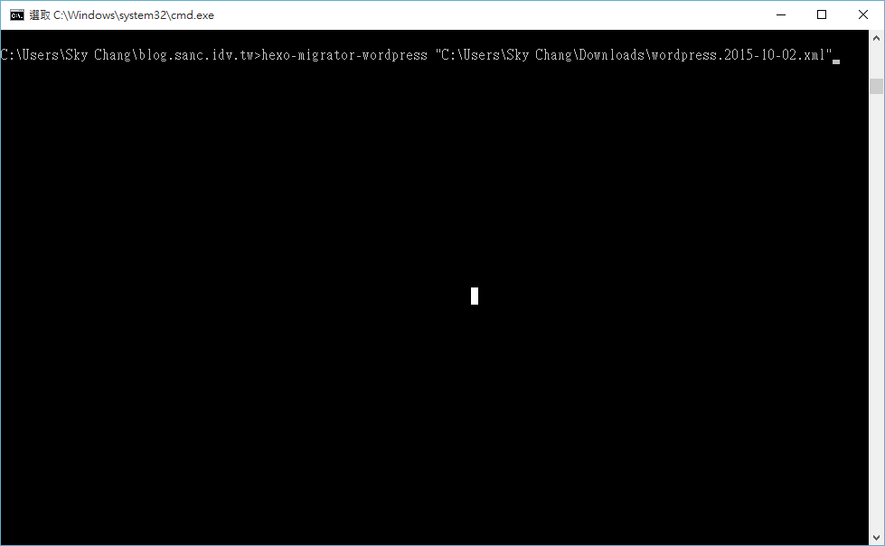
基本上，這樣子文章的轉移，就差不多完成了，但要注意一下，透過 rss 的方式，並不會把圖檔也載下來，簡單的說，就是圖檔還是在原本的圖庫裡面，還是透過超連結取得圖檔。但如果是從 Wordpress的方式載入進來的話，基本上是可以連圖檔一起進來的…
基本上，這篇先到這邊! 我們完成了文章的載入，那又要怎樣佈署上去呢?!
下一篇，我們將介紹如何上傳到 GitHub 上，並且正式發佈。
參考資料
- http://serverfault.com/questions/78048/whats-the-difference-between-ip-address-0-0-0-0-and-127-0-0-1#comment63540_78049
- http://wsgzao.github.io/post/hexo-guide/
- https://github.com/iissnan/hexo-theme-next
- https://git-scm.com/book/zh-tw/v1/%E4%BC%BA%E6%9C%8D%E5%99%A8%E4%B8%8A%E7%9A%84-Git-%E7%94%9F%E6%88%90-SSH-%E5%85%AC%E9%96%8B%E9%87%91%E9%91%B0
- https://gist.github.com/adamjohnson/5682757